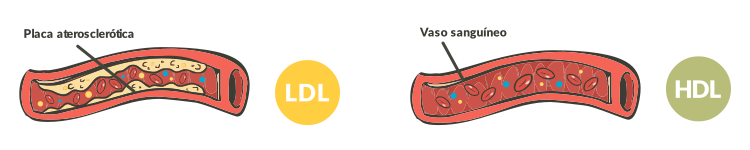

O colesterol faz parte da membrana das células, além de ser o precursor da síntese de vários hormônios, como cortisol, vitamina D, estradiol e testosterona. A hipercolesterolemia é um dos fatores de risco para a aterosclerose.
O colesterol LDL (LDL-c), por si só, não é um fator para a formação de células espumosas, sendo necessário que sofra oxidação e, desse modo, desencadeie o processo inflamatório no endotélio vascular.

O colesterol HDL (HDL-c) ajuda a remover o LDL das células espumosas e protegê-lo da oxidação. Em relação aos lipídios plasmáticos, os exercícios físicos aumentam os níveis de HDL-c, embora seus efeitos nos níveis absolutos de LDL-c sejam menos evidentes.